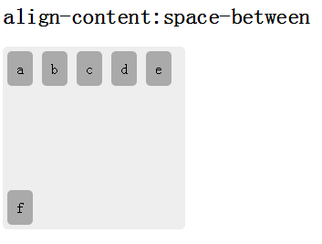

语法：
align-content:取值
说明：
align-content 设置或检索弹性盒堆叠伸缩行的对齐方式(适用于多行的弹性模型容器)
| 属性值 | 说明 |
|---|---|
| flex-start | 各行向弹性盒容器的起始位置堆叠。弹性盒容器中第一行的侧轴起始边界紧靠住该弹性盒容器的侧轴起始边界，之后的每一行都紧靠住前面一行。 |
| flex-end | 各行向弹性盒容器的结束位置堆叠。弹性盒容器中最后一行的侧轴起结束界紧靠住该弹性盒容器的侧轴结束边界，之后的每一行都紧靠住前面一行。 |
| center | 各行向弹性盒容器的中间位置堆叠。各行两两紧靠住同时在弹性盒容器中居中对齐，保持弹性盒容器的侧轴起始内容边界和第一行之间的距离与该容器的侧轴结束内容边界与第最后一行之间的距离相等。（如果剩下的空间是负数，则各行会向两个方向溢出的相等距离。） |
| space-between | 各行在弹性盒容器中平均分布。如果剩余的空间是负数或弹性盒容器中只有一行，该值等效于'flex-start'。在其它情况下，第一行的侧轴起始边界紧靠住弹性盒容器的侧轴起始内容边界，最后一行的侧轴结束边界紧靠住弹性盒容器的侧轴结束内容边界，剩余的行则按一定方式在弹性盒窗口中排列，以保持两两之间的空间相等。 |
| space-around | 各行在弹性盒容器中平均分布，两端保留子元素与子元素之间间距大小的一半。如果剩余的空间是负数或弹性盒容器中只有一行，该值等效于'center'。在其它情况下，各行会按一定方式在弹性盒容器中排列，以保持两两之间的空间相等，同时第一行前面及最后一行后面的空间是其他空间的一半。 |
| stretch | 各行将会伸展以占用剩余的空间。如果剩余的空间是负数，该值等效于'flex-start'。在其它情况下，剩余空间被所有行平分，以扩大它们的侧轴尺寸。 |
使用方法：
align-content:flex-start; /*各行向弹性盒容器的起始位置堆叠*/
兼容性：
- 浅绿 = 支持
- 红色 = 不支持
- 粉色 = 部分支持
| 支持版本\类型 | IE | Firefox | Safari | Chrome | Opera |
|---|---|---|---|---|---|
| 较早版本 | 6.0-10.0 | 4.0-25.0 | 5.1.7-6.0 | 21.0-28.0-webkit- | 9.5-12.0 |
| 较新版本 | 11.0 | 7.0-webkit- | 29.0 | 12.1 |
橘色说明要加浏览器的前缀
事例：
<ul id="box" class="box">
<li>a</li>
<li>b</li>
<li>c</li>
<li>d</li>
<li>e</li>
<li>f</li>
</ul>
.box{display:-webkit-flex;display:flex;-webkit-flex-wrap:wrap;flex-direction:wrap;width:200px;height:200px;margin:0;padding:0;border-radius:5px;list-style:none;background-color:#eee;}
.box li{margin:5px;padding:10px;border-radius:5px;background:#aaa;text-align:center;}
#box{ -webkit-align-content:flex-start;align-content:flex-start;}

